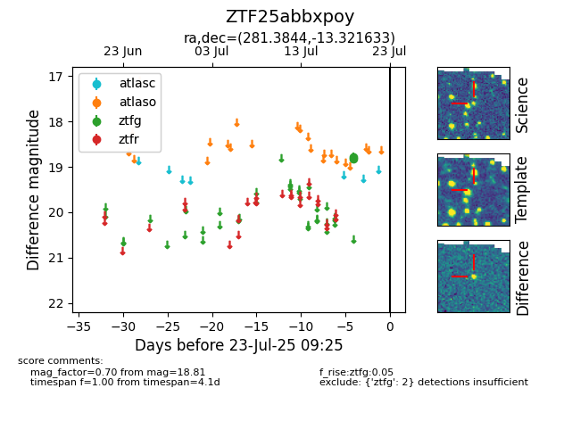

Target ZTF25abbxpoy at 2025-07-23 12:37, see:
FINK: fink-portal.org/ZTF25abbxpoy
Lasair: lasair-ztf.lsst.ac.uk/objects/ZTF25abbxpoy
ALeRCE: alerce.online/object/ZTF25abbxpoy
alt names
ZTF25abbxpoy (ztf,fink)
coordinates:
equatorial (ra, dec) = (281.3844,-13.32163)
galactic (l, b) = (20.3852,-4.74799)
photometry
last ztfg=18.81
2 ztfg detections
